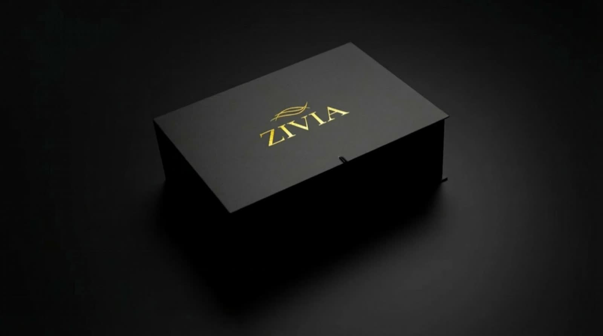
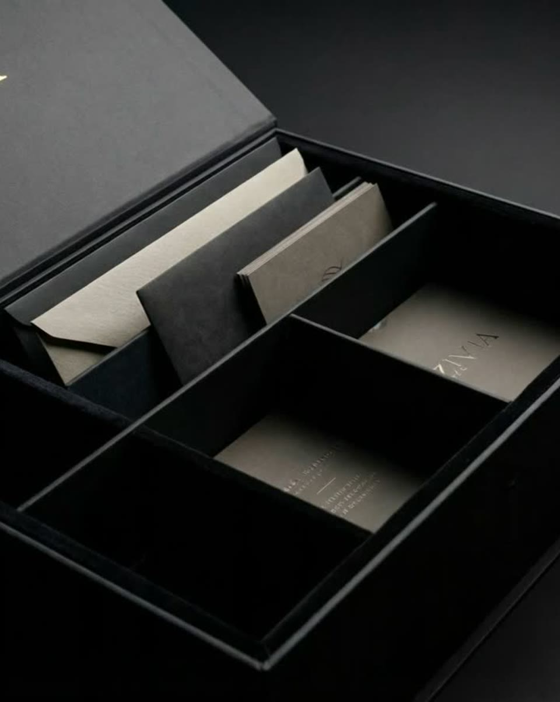
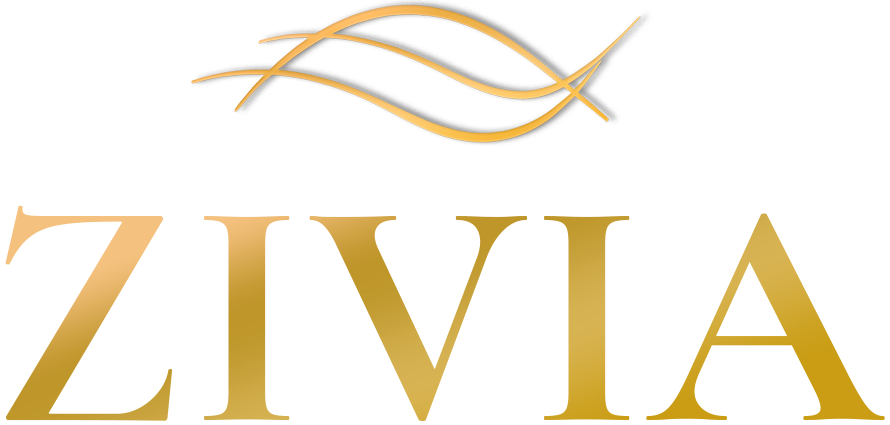

O começo
Vocês saem do automático e voltam ao lugar onde ainda existia curiosidade, escolha e presença.
Antes de abrir, deixe o mundo do lado de fora.
Diminua a luz, se puder. Isso leva poucos minutos.

Uma caixa com dez experiências guiadas para casais saírem do automático. Em casa, numa noite só de vocês.
Agora vocês estão dentro.Respire. O resto do mundo pode esperar.
“Não é falta de amor. É falta de presença.”
Nós não acusamos o casal. Acusamos o automático, que transforma dois apaixonados numa equipe que só administra a casa.
Dentro da caixa estão dez encontros guiados, um por vez. Cada um diz o que preparar, quanto tempo separar e como começar. Vocês só precisam estar lá.

Luz baixa, celular longe. Vocês escolhem a noite e abrem o envelope juntos.
Cada carta conduz o encontro do começo ao fim. Ninguém precisa improvisar.
Uma frase que faltava. Um olhar que voltou. A sensação de que vocês ainda se escolhem.
Dez cartas. Dez movimentos. Nenhum deles por acaso. Mostramos a intenção de cada um. O resto, vocês descobrem juntos.
Vocês saem do automático e voltam ao lugar onde ainda existia curiosidade, escolha e presença.
Vocês começam a perceber detalhes que foram ficando invisíveis ao longo dos anos.
Antes de qualquer resposta, existe um convite para enxergar o outro de novo.
Histórias que pareciam guardadas voltam a ocupar espaço entre vocês.
O mundo diminui o volume para que algo mais íntimo possa aparecer.
Algumas palavras encontram espaço para sair sem pressa, sem defesa e sem rotina.
A intimidade deixa de ser hábito e volta a ser presença, atenção e descoberta.
Vocês lembram que permanecer também pode ser um gesto consciente.
O que ainda pode ser vivido. Não como plano, mas como possibilidade.
A jornada se fecha no que importa: aquilo que a rotina não conseguiu apagar.

ZÍVIA A Dois chega pronta: dez cartas, os materiais de cada encontro e as instruções. Parece que levou semanas para planejar.
Não há nada para encenar. Os encontros são confortáveis, leves e naturais, e foram pensados também para quem não gosta de dinâmicas.
Cada encontro leva no máximo 15 minutos de preparo e já vem explicado. Basta escolher a noite e abrir o próximo envelope.
Não. É para casais que estão bem e querem continuar se encontrando, não só convivendo. Não substitui acompanhamento terapêutico.
Sim. Funciona para namoro, noivado ou casamento, com dois ou com vinte anos juntos.
Funciona, inclusive de última hora: chega pronta. Só que é um presente para viver a dois, não para guardar na gaveta.
De 40 minutos a 2 horas. Sugerimos um por semana, para a jornada durar dez semanas.

Feel again